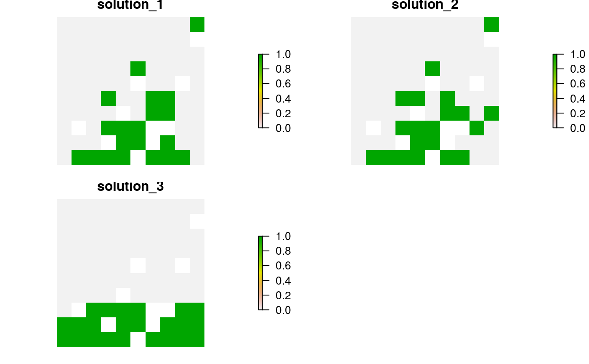
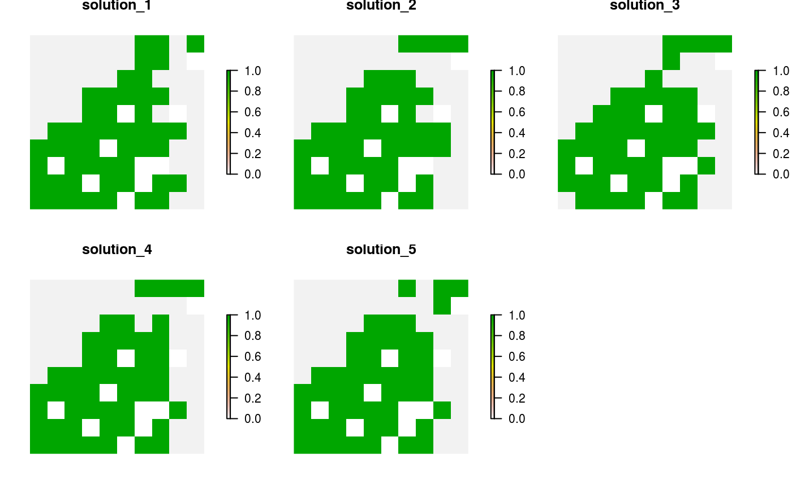
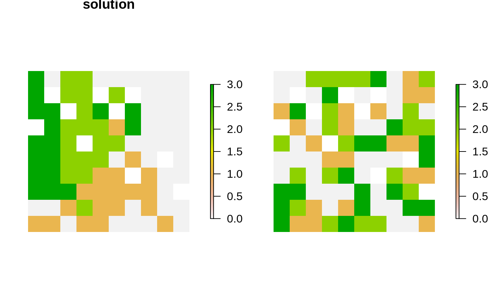

Generate a portfolio of solutions for a conservation planning
problem by extracting all the feasible solutions
discovered during the optimization process.
add_pool_portfolio(x, method = 0, number_solutions = 10)
| x |
|
|---|---|
| method |
|
| number_solutions |
|
ConservationProblem-class object with the portfolio
added to it.
This strategy for generating a portfolio requires problems to
be solved using the Gurobi software suite (i.e. using
add_gurobi_solver. Specifically, version 8.0.0 (or greater)
of the gurobi package must be installed. Please note that
although the solution pool methods are faster than the other methods
for generating portfolios of solutions, none of the pool methods
are guaranteed to return only solutions within a specified optimality gap.
Also, except for when the method argument is set to 2, none of
the search methods provide any guarantees on the number of returned
solutions.
# set seed for reproducibility set.seed(500) # load data data(sim_pu_raster, sim_features, sim_pu_zones_stack, sim_features_zones)# create minimal problem with pool portfolio p1 <- problem(sim_pu_raster, sim_features) %>% add_min_set_objective() %>% add_relative_targets(0.2) %>% add_pool_portfolio() %>% add_default_solver(gap = 0.02, verbose = FALSE) # solve problem s1 <- solve(p1) # print number of solutions found print(length(s1))#> [1] 3# create minimal problem with pool portfolio and find the top 5 solutions p2 <- problem(sim_pu_raster, sim_features) %>% add_min_set_objective() %>% add_relative_targets(0.5) %>% add_pool_portfolio(method = 2, number_solutions = 5) %>% add_default_solver(gap = 0, verbose = FALSE) # solve problem s2 <- solve(p2) # print number of solutions found print(length(s2))#> [1] 5# build multi-zone conservation problem with pool portfolio p3 <- problem(sim_pu_zones_stack, sim_features_zones) %>% add_min_set_objective() %>% add_relative_targets(matrix(runif(15, 0.1, 0.2), nrow = 5, ncol = 3)) %>% add_binary_decisions() %>% add_pool_portfolio() %>% add_default_solver(gap = 0.02, verbose = FALSE) # solve the problem s3 <- solve(p3) # print number of solutions found print(length(s3))#> [1] 3#> List of 3 #> $ solution_1:Formal class 'RasterStack' [package "raster"] with 11 slots #> $ solution_2:Formal class 'RasterStack' [package "raster"] with 11 slots #> $ solution_3:Formal class 'RasterStack' [package "raster"] with 11 slots #> - attr(*, "objective")= Named num [1:3] 11034 11210 12615 #> ..- attr(*, "names")= chr [1:3] "solution_1" "solution_2" "solution_3" #> - attr(*, "status")= Named chr [1:3] "OPTIMAL" "SUBOPTIMAL" "SUBOPTIMAL" #> ..- attr(*, "names")= chr [1:3] "solution_1" "solution_2" "solution_3" #> - attr(*, "runtime")= Named num [1:3] 0.0115 0.0115 0.0115 #> ..- attr(*, "names")= chr [1:3] "solution_1" "solution_2" "solution_3"# plot solutions in portfolio plot(stack(lapply(s3, category_layer)), main = "solution", axes = FALSE, box = FALSE)